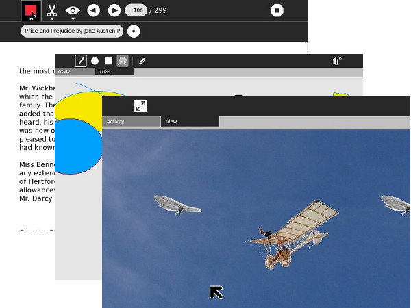

Introduction
"This book is a record of a pleasure trip. If it were a record of a solemn scientific expedition, it would have about it that gravity, that profundity, and that impressive incomprehensibility which are so proper to works of that kind, and withal so attractive."
From the Preface to The Innocents Abroad, by Mark Twain
The purpose of this book is to teach you what you need to know to write Activities for Sugar, the operating environment developed for the One Laptop Per Child project. This book does not assume that you know how to program a computer, although those who do will find useful information in it. My primary goal in writing it is to encourage non programmers, including children and their teachers, to create their own Sugar Activities. Because of this goal I will include some details that other books would leave out and leave out things that others would include. Impressive incomprehensibility will be kept to a minimum.
If you just want to learn how to write computer programs Sugar provides many Activities to help you do that: Etoys, Turtle Art, Scratch, and Pippy. None of these are really suitable for creating Activities so I won't cover them in this book, but they're a great way to learn about programming. If you decide after playing with these that you'd like to try writing an Activity after all you'll have a good foundation of knowledge to build on.
When you have done some programming then you'll know how satisfying it can be to use a program that you made yourself, one that does exactly what you want it to do. Creating a Sugar Activity takes that enjoyment to the next level. A useful Sugar Activity can be translated by volunteers into every language, be downloaded hundreds of times a week and used every day by students all over the world.

A book that teaches everything you need to know to write Activities would be really, really long and would duplicate material that is already available elsewhere. Because of this, I am going to write this as sort of a guided tour of Activity development. That means, for example, that I'll teach you what Python is and why it's important to learn it but I won't teach you the Python language itself. There are excellent tutorials on the Internet that will do that, and I'll refer you to those tutorials.
There is much sample code in this book, but there is no need for you to type it in to try it out. All of the code is in a Git repository that you can download to your own computer. If you've never used Git there is a chapter that explains what it is and how to use it.
I started writing Activities shortly after I received my XO laptop. When I started I didn't know any of the material that will be in this book. I had a hard time knowing where to begin. What I did have going for me though was a little less than 30 years as a professional programmer. As a result of that I think like a programmer. A good programmer can take a complex task and divide it up into manageable pieces. He can figure out how things must work, and from that figure out how they do work. He knows how to ask for help and where. If there is no obvious place to begin he can begin somewhere and eventually get where he needs to go.
Because I went through this process I think I can be a pretty good guide to writing Sugar Activities. Along the way I hope to also teach you how to think like a programmer does.
From time to time I may add chapters to this book. Sugar is a great application platform and this book can only begin to tell you what is possible. It is my hope that future versions of the book will have guest chapters on more advanced topics written by other experienced Activity developers.
Author : Introduction
© adam hyde 2006, 2007
Modifications:
James Simmons 2009, 2010
Lachlan Musicman 2010
License : General Public License
Produced in FLOSS Manuals (http://www.flossmanuals.net)